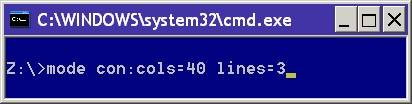

Configure a system device: COM / LPT port, or CMD console CON.
Syntax
Serial port:
MODE COMm[:] [BAUD=b] [PARITY=p] [DATA=d] [STOP=s]
[to=on|off] [xon=on|off] [odsr=on|off]
[octs=on|off] [dtr=on|off|hs]
[rts=on|off|hs|tg] [idsr=on|off]
Device Status:
MODE [device] [/STATUS]
Redirect printing:
MODE LPTn[:]=COMm[:]
Select code page:
MODE CON[:] CP SELECT=yyy
Code page status:
MODE CON[:] CP [/STATUS]
Display size - number of columns wide and number of lines deep:
MODE CON[:] [COLS=c] [LINES=n]
undocumented) abbreviated version of the above:
MODE Cols, Lines
Typematic rate:
MODE CON[:] [RATE=r DELAY=d]
Used without parameters, MODE displays the status of all devices installed on your system
(COM1, COM2, LPT1, CON) this output is language/locale specific.
C:\> MODE Status for device CON: ---------------------- Lines: 240 Columns: 80 Keyboard Rate: 31 Keyboard delay: 1 Code Page: 850
Mode can be used to set the display window to be larger than the monitor width and/or height, in this case the CMD window size will be restricted to the display size but a scroll bar will appear. If the display window is made very large (many times the size of a typical display), the memory used by conhost.exe will increase, in extreme cases to over 1 GB.
Show the status of a specific device:
MODE [device]
To additionally show the status of any redirected parallel printer:
MODE [device] [/STATUS]
Typematic rate is the rate at which a character is repeated when you hold down a key.
MODE CON[:] [RATE=r DELAY=d]
To redirect output from a parallel port (PRN, LPT1, LPT2, or LPT3) to a serial port(COM1, COM2, COM3, etc).
You must be a member of the Administrators group to redirect printing.
To configure a parallel printer port (PRN, LPT1, LPT2, or LPT3):
MODE LPTn[:]=COMm[:]
To setup the parameters for a serial port.
MODE COMm [options*]
Configure a printer connected to a parallel printer port.
mode LPTn[:] [c][,[l][,r]]
mode LPTn[:] [cols=c] [lines=l]
This allows you to configure a line printer connected to a parallel printer port.
The border size (for all windows) can be set in the registry or with REG, the defaults are -15 for BorderWidth and -60 for PaddedBorderWidth
@echo off
Echo Display the current border
REG QUERY "HKCU\Control Panel\Desktop\WindowMetrics" /v BorderWidth
REG QUERY "HKCU\Control Panel\Desktop\WindowMetrics" /v PaddedBorderWidthEcho Set the border to 12 with 0 padding
REG ADD "HKCU\Control Panel\Desktop\WindowMetrics" /v BorderWidth /d -12 /f
REG ADD "HKCU\Control Panel\Desktop\WindowMetrics" /v PaddedBorderWidth /d 0 /f
Logoff and login again to see the new border. (also see PowerShell script for setting the border + color/spacing.)
Change the current code page:
MODE CON[:] CP SELECT=yyy
Display the current Code page:
MODE CON[:] CP [/STATUS]
Examples:
MODE CON:cols=80 lines=25
MODE 80, 50

“The dogma of the ghost in the machine” ~ Gilbert
Ryle
Related:
NET - manage network resources
CHCP - Display or change device settings
Equivalent bash command (Linux):
screen - Terminal window manager